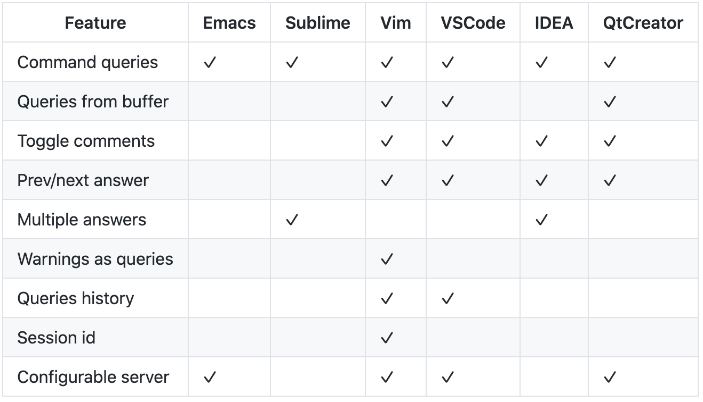
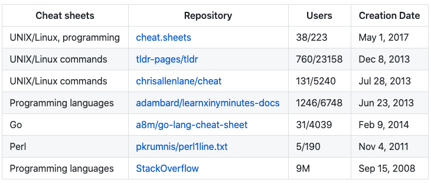

从来没有这么强烈想推荐一个工具
大家好，我是站长 polarisxu。
在逛 GitHub Trending 时看到了这个项目：https://github.com/chubin/cheat.sh，因为之前我整理过一系列 cheatsheet，因此好奇的打开了这个项目。于是被它吸引了。。。
01 是什么
该项目的描述是：
the only cheat sheet you need
简单一句话却很吸引人：这么强大，这一个 cheatsheet 就够了？
因为在这一份清单中，包含了几乎所有开发者常见的东西，不仅如此，它还提供了很好的获取接口，让你轻松的找到你想要的。它是一个统一访问世界上最好的、社区驱动的备忘单（cheat sheet）存储库。
02 有什么
让我们想象一下，有一种理想的备忘单。看起来像什么？它应该具有什么功能？
- 简洁—它只应包含你需要的东西，而不能包含其他任何东西；
- 快速—想使用时就能立马使用；
- 全面—它应该包含每个可能问题的答案；
- 通用—它应该随处可用，无需任何准备；
- 不打扰—它不应分散你的主要任务；
- 辅导—它应该可以帮助你学习该主题；
- 不起眼—完全可以忽略使用它；
作者认为 cheat.sh 做到了。我也认为做到了。
那它具体有哪些特性呢？
- 具有简单的 curl/browser 界面；
- 涵盖 56 种编程语言，若干 DBMS 和 1000 多种最重要的 UNIX/Linux 命令；
- 与 StackOverflow 一样，提供对世界上最好的社区驱动的备忘单存储库的访问；
- 随处可用，无需安装；
- 超快，通常会在 100 毫秒内返回答案；
- 有一个方便的命令行客户端 cht.sh，虽然不是必须的，但它非常有用且很有帮助；
- 可以直接从代码编辑器中使用，而无需打开浏览器并且不切换您的思维环境；
- 支持特殊的隐形模式，在这种模式下，无需触摸按键和发出声音即可完全隐身使用；
03 如何使用
使用 cheat.sh 有以下几种方式：（可以是 HTTP 或 HTTPS，也可以是 cheat.sh 或 cht.sh）
- 在终端使用 curl 工具；
- 使用其他 HTTP/HTTPS 客户端；
- 浏览器访问 cheat.sh；
- 终端使用 cht.sh 客户端；
- 在你的编辑器中集成；
一般建议通过 curl 工具、cht.sh 客户端或编辑器插件来使用。使用示例：
$ curl cheat.sh/tar
$ curl cht.sh/go
$ curl https://cheat.sh/php
$ curl https://cht.sh/redis
上面例子中，tar、go、php、redis 等可以是 Linux 命令，也可以是语言的命令等。
如果你记不起来命令准确名称，则可以使用 〜KEYWORD 表示法进行搜索。例如，查看如何制作文件系统/卷/其他内容的快照：
$ curl cht.sh/~snapshot
官方的一张图看看相关说明：

关于选项（options），可以通过 /:help 查看。对于开发来说，经常会加上 Q 选项，比如上面命令加上 Q 选项后的结果：
$ curl "http://cheat.sh/go/execute+external+program?Q"
cmd := exec.Command("yourcommand", "some", "args")
if err := cmd.Run(); err != nil {
fmt.Println("Error: ", err)
}
关于更多使用在客户端工具 cht.sh 中介绍。
04 客户端工具 cht.sh
cheat.sh 服务有自己的命令行客户端（cht.sh），与使用 curl 直接查询该服务相比，它具有几个有用的功能：
- 特殊的 shell 模式，具有持久查询上下文和 readline 支持；
- 查询历史；
- 粘贴板整合；
- shell 的 tab 完成支持（bash、zsh、fish）；
- stealth 模式；
安装
mkdir -p ~/bin/
curl https://cht.sh/:cht.sh > ~/bin/cht.sh
chmod +x ~/bin/cht.sh
确保 cht.sh 在 PATH 中，方便使用。
shell 模式需要 rlwrap，这是 readline 的包装。Mac 下可以通过 brew install rlwrap 安装。
使用
有了 cht.sh，之前 curl 的方式可以用更自然的方式。比如：
$ cht.sh go execute external program
个人更推荐采用交互式 shell 模式：
$ cht.sh --shell [LANG]
其中 [LANG] 可以指定具体的编程语言，比如 go。
因此 cheat.sh 命令有两种上下文：特定语言和非特定语言（全局）。:help 在这两种上下文下显示的内容是不一样的。
- 在特定语言下，有 hello、
:list和:learn，其中:learn是该语言的一个简短教程； - 通过
/可以切换上下文。比如：/go 表示在 go 这个语言上下文查找；/tar 表示在全局上下文查找 tar 命令； - 查找当前所在语言的内容，直接查询即可，比如当前如果是 Go 上下文，直接输入 int，可以查看 int 类型的信息；
在交互式 shell 下通过 help 命令可以查看帮助：
cht.sh> help
help - show this help
hush - do not show the 'help' string at start anymore
cd LANG - change the language context
copy - copy the last answer in the clipboard (aliases: yank, y, c)
ccopy - copy the last answer w/o comments (cut comments; aliases: cc, Y, C)
exit - exit the cheat shell (aliases: quit, ^D)
id [ID] - set/show an unique session id ("reset" to reset, "remove" to remove)
stealth - stealth mode (automatic queries for selected text)
update - self update (only if the scriptfile is writeable)
version - show current cht.sh version
/:help - service help
QUERY - space separated query staring (examples are below)
cht.sh> python zip list
cht.sh/python> zip list
cht.sh/go> /python zip list
其中 cd 用来切换语言上下文；copy 和 ccopy 用来复制内容。
定制
如果你想要定制 cht.sh，可以编辑文件：~/.cht.sh/cht.sh.conf。我觉得用默认即可。
05 编辑器集成
这方面对 Vim 的支持是最好的。见下图：

项目首页提供了这些编辑器对应的插件和配置、使用方法。请自行根据需要按照、配置。
06 搜索
cheat.sh 包含内容众多，方便的搜索是必不可少的。除了上文介绍的 ~KEYWORD 方式，还支持其他一些选项（辅助功能）。
i case insensitive search
b word boundaries
r recursive search
比如：
/~shot/bi
07 实际用途
比如我想查询某们语言 MD5 怎么用？
Go 语言
cht.sh>/go md5
/*
* cryptography - How to get a MD5 hash from a string in Golang ...
*
* From crypto/md5 doc (http:golang.org/pkg/crypto/md5/#New):
*/
package main
import (
"crypto/md5"
"fmt"
"io"
)
func main() {
h := md5.New()
io.WriteString(h, "The fog is getting thicker!")
fmt.Printf("%x", h.Sum(nil))
}
// [Stephen Hsu] [so/q/2377881] [cc by-sa 3.0]
PHP 语言
cht.sh>/php md5
/*
* php - Using MD5 on login page
*
* Simply wrap $_POST['password'] into md5() like so:
*/
$mypassword = md5 ($_POST['password']);
Java 语言
cht.sh>/java md5
/*
* java - How can I generate an MD5 hash?
*
* The MessageDigest class can provide you with an instance of the MD5
* digest.
*
* When working with strings and the crypto classes be sure to always
* specify the encoding you want the byte representation in. If you just
* use string.getBytes() it will use the platform default. (Not all
* platforms use the same defaults)
*/
import java.security.*;
..
byte[] bytesOfMessage = yourString.getBytes("UTF-8");
MessageDigest md = MessageDigest.getInstance("MD5");
byte[] thedigest = md.digest(bytesOfMessage);
/*
* If you have a lot of data take a look at the .update(byte[]) method
* which can be called repeatedly. Then call .digest() to obtain the
* resulting hash.
*
* [koregan] [so/q/415953] [cc by-sa 3.0]
再比如你需要反转一个数组，不知道怎么写，可以找 cheat.sh 帮忙：
cht.sh> /go reverse list
/*
* How do I reverse an array in Go?
*
* Honestly this one is simple enough that I'd just write it out like
* this:
*/
package main
import "fmt"
func main() {
s := []int{5, 2, 6, 3, 1, 4}
for i, j := 0, len(s)-1; i < j; i, j = i+1, j-1 {
s[i], s[j] = s[j], s[i]
}
fmt.Println(s)
}
08 数据来源
目前 cheat.sh 的数据来源如下：


你也可以为 cheat.sh 做贡献，输入 :post 看看。
09 总结
这个项目在 GitHub 近 21k Star，觉得不错可以点个 Star，让更多人知晓这个优秀的项目。希望它能够为你的工作带来便利，通过查这个手册，能够提升你的效率，同时增强你的能力。